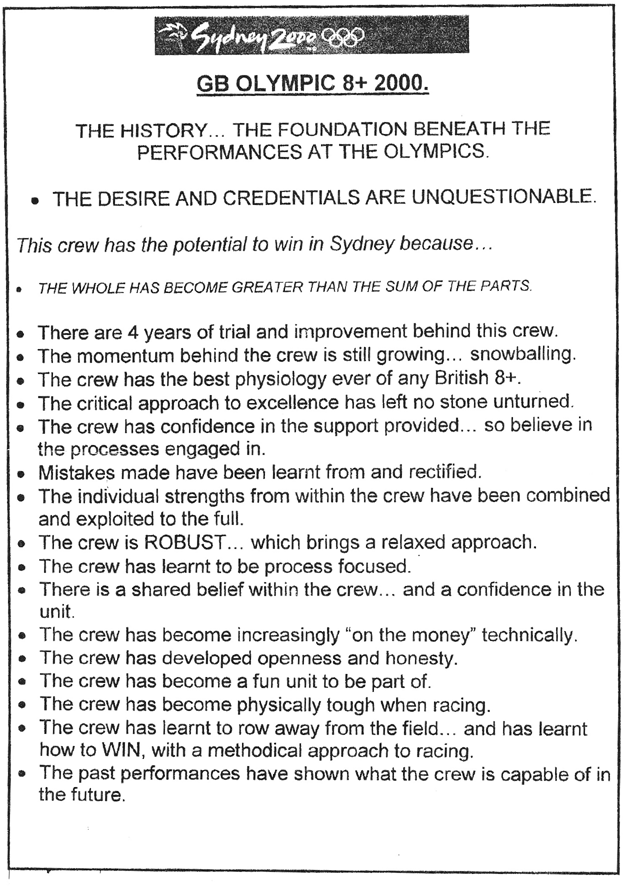

Beliefs: The wheels on the bus go round and round
Ben: “In 2000 I felt calm because I just knew we could do it. I had total certainty and confidence that we were fast. Very fast”.
Chapter summary
Self-belief accelerates success. Most people pick up beliefs in a haphazard way, but there are plenty of simple strategies for actively cultivating useful beliefs.
1. The four beliefs we need to have are:
1a.D – Deserved
1b.I – Important
1c.C – Can do
1d.E – Exciting
2.The crew used three key sources for powerful beliefs:
2a.Personal memories
2b.Role models
2c.Metaphors/analogies
3.And two strategies for strengthening beliefs
3a.Repetition
3b.Using emotion
What impact is uncertainty having in your world?
•Does your sales team have unshakeable confidence that they can hit their targets? Or do they walk into a pitch with a slight hesitation that rubs off on the client?
•Do your managers know they can unlock the potential of their teams? Or do they pay lip service to staff development because in their heart of hearts they believe current performance is pretty much as good as it gets?
•Are you confident in your parenting approach, or do you worry that you’re getting it wrong?
As Henry Ford reputedly said:
“Whether you think you can or whether you think you can’t, either way you’re probably right.”
Strong belief is vital to achieving our goals, but exactly what should we believe? If we believe we can fly and start jumping off tall buildings we’d be locked away. How was Ben’s belief that he could win Gold any different from a deluded fantasy that he could sprout wings and take off? Even if we know what it is reasonable to believe, how on earth do we go about growing a belief? It’s not as simple as buying brain compost and belief seeds and growing-your-own.
Ben didn’t always have certainty and conviction. He wasn’t one of those annoying celebs you see on chat shows who talks about “always knowing since I was five years old …” If you ask Ben about the rowing championships in 1998 (when the crew came seventh) he talks about, “Forcing ourselves to try and believe.”
Ask him about his beliefs before the 2000 Olympics and it’s a very different story. His conviction is evident in his body language as he talks. Ben’s tone is matter of fact as he says, “We knew we could win.” He looks you in the eye; he is relaxed, he’s not boasting, he just had total conviction that he’d get Gold.
So what changed between 1998 and 2000?
Firstly, the crew had four clear beliefs that helped them to achieve their goal. Secondly, they used three sources to supply those beliefs and, lastly, they used two strategies to strengthen them. We’ll look at the four types of beliefs first and then explain the sources and the belief-building methods.
Section one: What do we need to believe?
Think of four wheels on a bus – each wheel works independently, but they also all have to work together. If the tyres are soft it’s much more difficult to control the vehicle. If we’re missing a wheel we’d probably come to a shuddering halt.
If our core beliefs are strong – the metaphorical wheels on our vehicle are pumped up properly – we roll easily over small bumps along the way to achieving our goal.
An easy way to remember the four wheels is the mnemonic DICE:
•D – Deserved
•I – Important
•C – Can do
•E – Exciting
1a.I deserve this
We need to believe we deserve success. We deserve to write that bestseller or get that promotion or close that million dollar deal. Over many years of coaching I’ve found it a consistent theme that many of us think we’re not quite worthy enough, or worry that we’ll get found out for not really knowing what we’re doing. The simple way Ben pumped up this ‘tyre’ was to strip things back to basics:
Ben: “I never thought I deserved to win at the Olympics. God no, who deserves that? But I did deserve to win this race, because that was all it was. It was just a race between our crew and the other guys we’d been racing for years. With everything I’d put in I deserved it as much or more than them. It was just a race.”
With that in mind, focus on your goal and write down five reasons why it’s totally reasonable that you should achieve it. You don’t need to be arrogant, quite the reverse – it’s just a book, or a promotion, or a deal. The opportunity is there for everyone else, you’ve worked hard for it – there, that’s two to start your list already!
1b. This is important
The goal must be important to us and link to one of our bigger values. We might want a promotion at work to unlock our potential or get more money to provide for our family. Sometimes the goal seems enough in its own right – we just feel it in our gut.
To really get focused and uncover your core motivation ask yourself:
•Why is this important?
•What will achieving this goal improve in my life?
•How will I feel when I’ve achieved it?
Ben: “In my training diary I wrote these reasons:
•To gain respect from oarsmen like Steve Redgrave, Matthew Pinsent, Greg Searle.
•To show that Britain is/can be good and win
•For every wedding that I’ve missed because I had to train – Sally, Sam, Annabel, Neil, Pete, Tiff ...
•For every ergo test that hurt like hell
•For my parents and Isabella. I owe it to them for all the pain I’ve put them through and the unending support they’ve given me.”
This focus is crucial and gives us the fuel to keep going when things get tough – we are bound to encounter bumps along the way towards our goals. It’s at difficult times that it’s oh-so-tempting to give up, so make sure that, right at the forefront of your mind, you have superglue-strength reasons why it’s important to stick at it.
1c. I can do this
You need to believe you can do it. If you don’t quite know how you’ll achieve it, you need to believe that you will, absolutely, figure out a way.
Ben: “In 1998 we knew Jürgen’s approach wasn’t working for us. There were many possible routes; our job was to find a route that worked for us. The moments when I thought about giving up were the times when I lacked self-belief. I couldn’t see a way for things to get better.”
It’s interesting that the team believed there was more than one route to success. We’ve coached people who have got stuck because they thought there was only one answer. They waste energy hunting for some holy grail, some magic dust – maybe if they copy an expert they will get the right answer.
Notice the difference between asking ‘can I do this?’ and ‘how am I going to do this’? Ask yourself the second question and you are much more likely to get useful answers to propel you towards your goal.
1d. This is exciting
The goal needs to be enticing, something we are passionate about. There are plenty of things that we may believe to be important, but simply don’t excite us. Most people would agree that global warming, injustice and poverty are important issues, but not everyone gets fire in their belly about them. It’s that fire that speeds your progress forwards. Your passion doesn’t have to be saintly, but it does have to be strong.
Barcelona in 1992 was Ben’s first Olympic Games. That year Greg and Jonny Searle – with Gary Herbert coxing them – won the Gold in the coxed pair.
Ben: “Greg and I were good mates. We were the new boys in the British team and the others took the piss out of us mercilessly for being a couple of idiots. For example I nearly wore a dress to the Barcelona opening ceremony – I swapped clothes on the bus there with Astrid from the women’s eight as a dare from Greg – and thank God she bottled it in the car park.
But now Greg was an Olympic Champion. Here was my mate, who I did stupid stuff with, and he was the best in the world. I thought it was amazing, inspiring, something I had to do.”
What really does excite you about your goal? Is it that you should stop smoking for health reasons or if you’re honest with yourself is it much more exciting to prove your nagging, disbelieving partner wrong? Get clear on your genuine motivators to accelerate your success.
Section two: Where to get beliefs from
We’ve looked at the four ‘wheels’ on the bus – the four beliefs that will help us reach our goal – that we are deserving, that it’s important, that we can achieve success and that it’s incredibly exciting.
How do we pick up these useful beliefs? We need to consciously hunt for them. Have you ever walked past a friend in the street or missed your bus stop because you weren’t concentrating? In the same way, useful facts might be staring us in the face, but unless we actively look for them, we can miss them entirely. Ben and the crew made it a deliberate habit to look for reasons why they would succeed.
Ben: “The last training camp in ‘98 was at Varese. In one of the sessions we did a 1,000 metre sprint at world record pace. In other words if we’d done that over 2,000 metres in a competition, we would have broken the world record. So we knew we could do it, it was a turning point.”
It would have been so easy to dismiss this as a fluke, or to miss the significance, but the crew got into the habit of finding proof that they would win Gold.
There were three places in particular that proved fruitful hunting grounds for useful beliefs: their personal memories, role models and metaphors/analogies.
2a. Personal memories
Can you think of a time when you won against the odds or did something you were proud of? When we are struggling to achieve a current goal it massively helps our self-belief to remind ourselves that we have achieved success in the past. For example, Ben remembered an episode from his school days.
Ben: “As a seventeen year old my school coach, Mark Hayter, took a group of us to the under eighteens national team trials in Chester. Robin Graham (a guy in my year) and I were in a pair together. I remember watching the top Junior pairs in awe.
To our total astonishment we came second. We were nobodies. But we’d beaten some of the pairs we’d watched with awe. With no experience at this level we could go fast, really fast. What else was possible? Who else could I beat?”
That personal experience was a powerful source of strength years later when the British crew had to beat crews they had never beaten before in order to achieve Gold.
What have you achieved in the past that proves you have the capability for success? It’s so easy to forget or take for granted the massive achievements you’ve made in your life:
•Remember starting your first job? Doing your first exam? Managing a budget for the first time? So whatever new challenges you are facing now, surely you can manage them?
•How much better are you now at using a computer or making a presentation than you were when you started out? So surely you’ll master the new skills you need to achieve your current goal?
•What tough times have you bounced back from? Difficult relationships have you handled? So surely you can turn around the setbacks you are facing now?
Your past successes are a rich source of belief for your current endeavour.
2b. Role models
Who has done what you want to do, or something similar? If they can do it, why can’t you?
Ben: “In 1992 at the Barcelona Olympics the Australian double won the Gold Medal in the men’s double. Stephen Hawkins and Peter Antonie were the smallest crew by a mile. There is no way that they should have won given their size but they did. They were amazing. They inspired me because our crew wasn’t the physically strongest in the world. It helped me realise that we could win Gold through technical brilliance and team work.”
Who is just ahead of you? What can you learn from them? Which of their strategies can you adapt for yourself?
2c. Metaphors and analogies
“I wandered lonely as a cloud…”
“If music be the food of love, play on; give me surfeit of it…”
Metaphors and analogies make pretty poetry, but they are also powerful belief-changing tools. They work like cranes in our brains lifting ideas from one mental compartment to another. They can, therefore, take an idea our minds have labelled ‘scary and challenging’ and transfer it to ‘easy and doable’.
The crew talked about their journey to the Sydney Olympics as being like a stone rolling downhill, gathering momentum and rolling faster and faster. Easy to picture isn’t it? In fact you can almost feel it, can’t you? Analogies appeal to the emotional centres in our brain and are easy to remember. Research suggests that the more we remember or visualise something the stronger the neural networks laid down in the brain, which strengthens our belief.
What metaphors or analogies would work to help you get your goal?
•If you are feeling stuck, what would oil your wheels?
•If you are lost, who could guide you forwards?
•If you have a mountain to climb, what are some milestones on the way to aim for?
Section three: How to strengthen beliefs
The crew found the three sources of useful beliefs – personal memories, role models and metaphors/analogies incredibly powerful, but they didn’t stop there. They actively grew and strengthened their beliefs using two key strategies:
3a. Repetition
The crew constantly reminded themselves of their useful beliefs in order to strengthen their conviction. For example their psychologist, Chris Shambrook, captured a written list of reasons why we are going to win. There’s a copy of it on page 67.
They talked regularly about the reasons: in everyday conversations, before and after training and in sessions with Chris. It became as normal as talking about the weather or the latest sporting results. This dialogue was particularly vital when the pressure got immense:
Ben: “The day before the Olympic final, after an incredibly stressful few hours, we got together and reminded ourselves why we were going to do it. I had tears streaming down my face; I just cared about it so much.”
How can you remind yourself of your beliefs? Examples from our clients include:
•Making it a standard agenda item at team meetings.
•Keeping personal journals to write down and revisit reasons.
•Putting visual reminders out – e.g. one client put a (small!) rock on his desk to remind himself of the rock-solid reasons why he would succeed.
3b. Emotional depth
The second method the crew used to strengthen their beliefs was to fire them up with strong emotion. Not just happy-clappy feelings like excitement and desire, but ones that, on first glance, are seemingly unhelpful like jealousy, anger, the desire to say, “I told you so.”
Ben: “When we lost to the Aussies in the 2000 heat we were absolutely furious. I also knew that if they had only beaten us by that small amount when we were rowing really badly then they were in trouble.”
Anger is energy. It would have been so easy for Ben and the crew to burn themselves up being angry for giving such a rubbish performance. Instead, they used the anger as a powerful catalyst. Rational reasons aren’t enough, if they were we’d all eat our five a day and floss our teeth every night. We must cultivate emotional leverage to turn the hard lumps of rational ‘I could’ into a burning fire of ‘I can’.
Ben: “In 1991 when I first went to Leander Club to train, everyone had just done a bench pull test. You lie on your front on a plank about a metre from the floor and you have to lift a 45kg weight from the floor to the plank. It’s a seven minute test. The first six minutes you have to lift the weight every two seconds, in the last minute you can do as many as you want, so long as it is more than every two seconds. The worst result was 40 something lifts. I had a go and managed about 20. I couldn’t even keep going for one minute, let alone seven.
I didn’t know when the next test was, but I wasn’t going to be humiliated in front of Redgrave and everyone else. There were a few people in the club who I knew that I could beat and with that belief came the simple clarity that all I had to do was practise. Every day, for about two years, after training I’d go to the weights room and practise. While everyone else was changing and starting breakfast, I’d practise. Two years later I came second in the test with 50kg, I did 225 lifts.”
When have you felt strongly enough about an issue that it’s driven you to find a way to resolve it? What emotions are going to motivate you now to keep hunting for those reasons why and keep reinforcing your belief?
Conclusion
Having properly pumped up tyres is a basic safety requirement for having a car on the road and the same is true for having strong beliefs to achieve our goals. It’s easy to think that beliefs are out of our control – we either have self-belief or we don’t – but Ben’s experience shows that’s simply not true.
We can search through our personal memories, look for role models, review metaphors and analogies and thereby create solid evidence that we are going to succeed. Add a dash of emotion and a slug of repetition and that’s a powerful mixture. Beliefs are the bedrock – without them it’s pretty likely that our car will seize up when we hit the first pothole in our journey. It’s too risky to leave it to chance. Remember Henry Ford’s advice? When you believe that you deserve your goal, that it’s important, that you can do it and that it’s incredibly exciting – you are probably right.
Building strong beliefs is the positive bit, the other side of the equation is using bullshit filters to guard against negative beliefs and that is exactly what the next chapter is all about.
You can sign up for our free e-course to get you started on using the strategies we wrote about in this chapter, you will also find crib sheets, downloads and other free resources at www.MyCrazygoal.com/Book-Resources

‘Reasons why we are going to win’